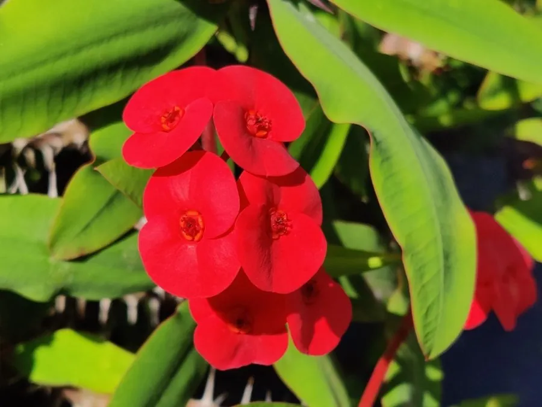

灌木与花木 · 植物界
虎刺梅 Euphorbia milii

大戟科多浆灌木，茎密生硬刺，全年开红色苞片小花，耐旱喜光，是常见的盆栽观赏植物，乳汁有毒。
- 分类
- 门被子植物门纲木兰纲目金虎尾目科大戟科属大戟属
- 栖息环境
- 温暖干燥的庭园与盆栽环境，喜光耐旱
- 地理分布
- 原产马达加斯加；中国各地盆栽，南方可露地栽培
- 保护级别
- 暂无评估；中国未列入国家重点保护野生植物名录
物种志
虎刺梅为大戟科大戟属多浆灌木，高 30–100 厘米，茎直立，多分枝，具棱，棱上密生硬刺。叶互生，倒卵形至匙形，肉质，常生于嫩枝顶端，早落。杯状聚伞花序生于枝顶，总苞片鲜红色，形似花瓣，花期全年，以春夏最盛；果实为蒴果，但栽培条件下很少结果。
虎刺梅原产马达加斯加，中国各地广泛盆栽，喜阳光充足、温暖干燥的环境，耐旱、怕积水，不耐寒。它茎上密生硬刺，红色苞片经久不落，是常见的室内外盆栽观赏植物；园艺品种有白、粉、黄等苞片颜色。乳汁有毒，接触皮肤会引起红肿，误食可致呕吐腹泻，修剪时应戴手套并避免儿童与宠物接触，冬季需保持 10℃ 以上。
形态与习性
- 株高30–100 厘米，茎具硬刺
- 花期全年，春夏最盛，红色苞片
- 果期栽培条件下很少结果
- 光照喜阳光充足
- 水分耐旱，忌积水
- 土壤疏松透气、排水良好的沙质土
- 主要用途盆栽观赏，南方庭院点缀
趣味知识
- 虎刺梅的红色“花瓣”其实是总苞片，真正的花很小。
- 它的茎上密生硬刺，修剪和搬动时需戴厚手套。
- 虎刺梅原产马达加斯加，耐旱怕涝，适合粗放管理。
- 乳汁有毒，误食可致呕吐腹泻，应远离儿童与宠物。